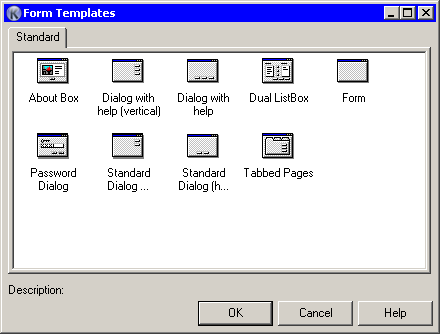

This dialog is for conveniently create new forms based on your own templates.
By default, dialog has one “Standard” tab. On this tab are shown templates placed into main “Templates” folder. This tab can't be removed.

You can just add your templates in the “Templates” folder, they will be visible in the list. But if you need more flexibility and categorize your templates, just create additional subfolders under “Templates” folder and place your templates into them. When you open gallery dialog, you will see new tabs - as much as created subfolders and named the same - with your templates inside. You can create any number of subfolders, but only one level deep from “Templates” folder.
When you create a form, from what you want to make a template, just assign an icon to form, and description in the “Description” property. This information will be visible in gallery. If no icon is assigned to your template, a default one will be used.
In this dialog exists a context menu, that allow switch list modes (icons, details etc).